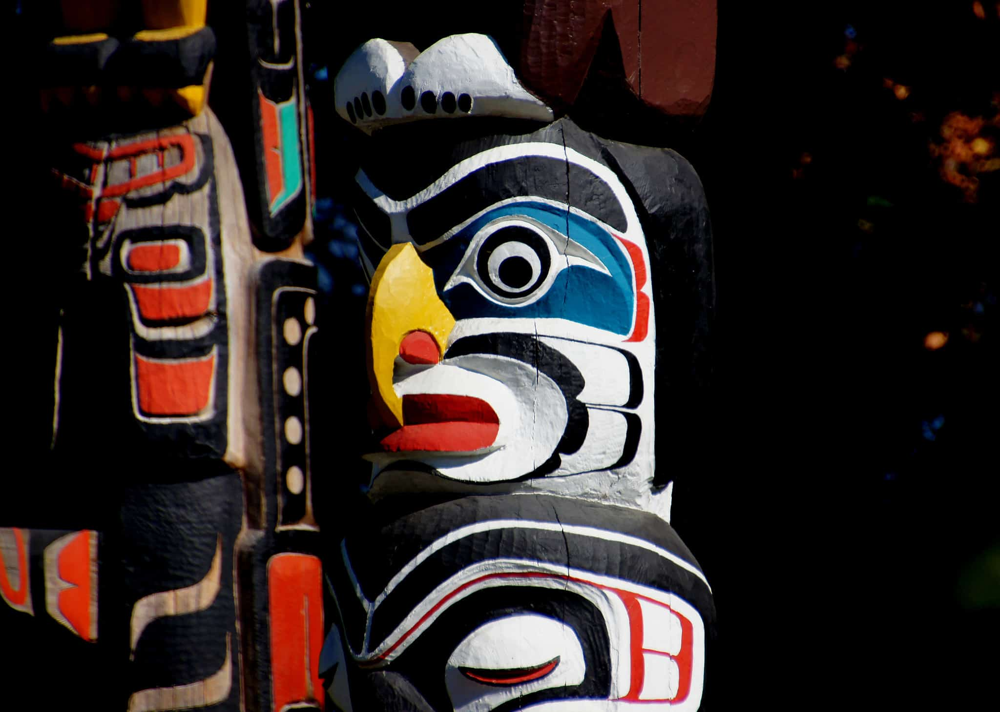

1.Maple Syrup
2.Dream Catcher

3.Aboriginal Art

4.Inukshuk Gifts
5.Crown Royal Canadian Whiskey
6.Smoked Salmon
Best Places For Shopping in Canada
1. Yorkville, Toronto, Ontario
2. West Edmonton Mall, Edmonton, Alta.
3. ByWard Market, Ottawa, Ontario
4. The Forks, Winnipeg, Man.
5. Pacific Mall, Markham, Ont.
6. Old Quebec City, Quebec City, Que.
Winter in Quebec City